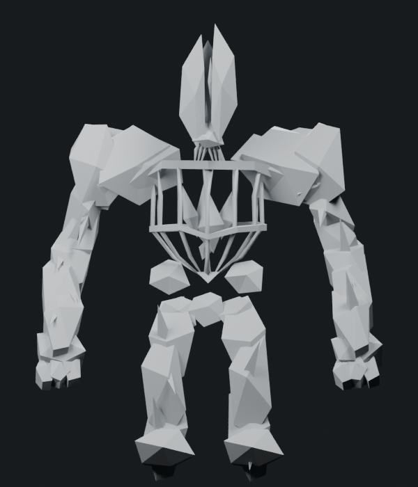
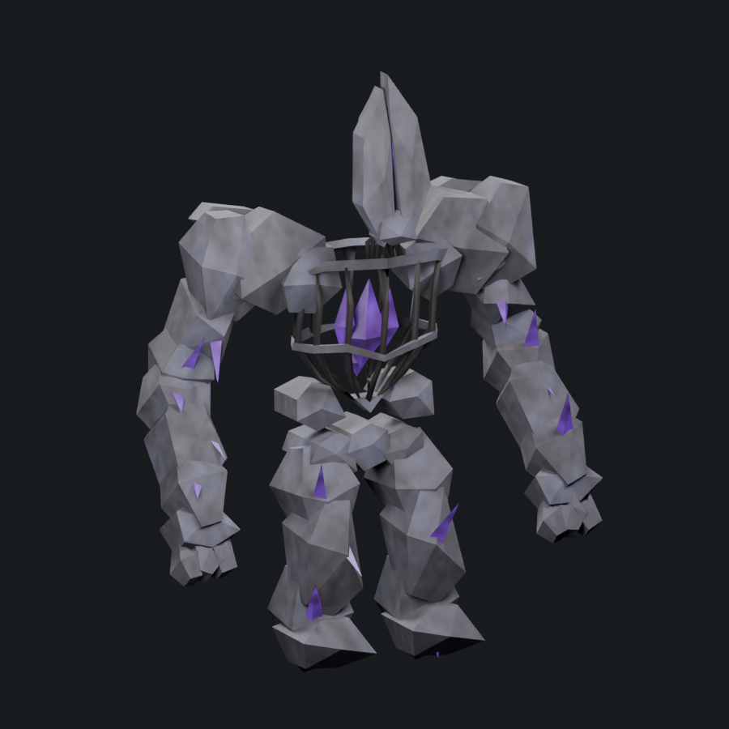
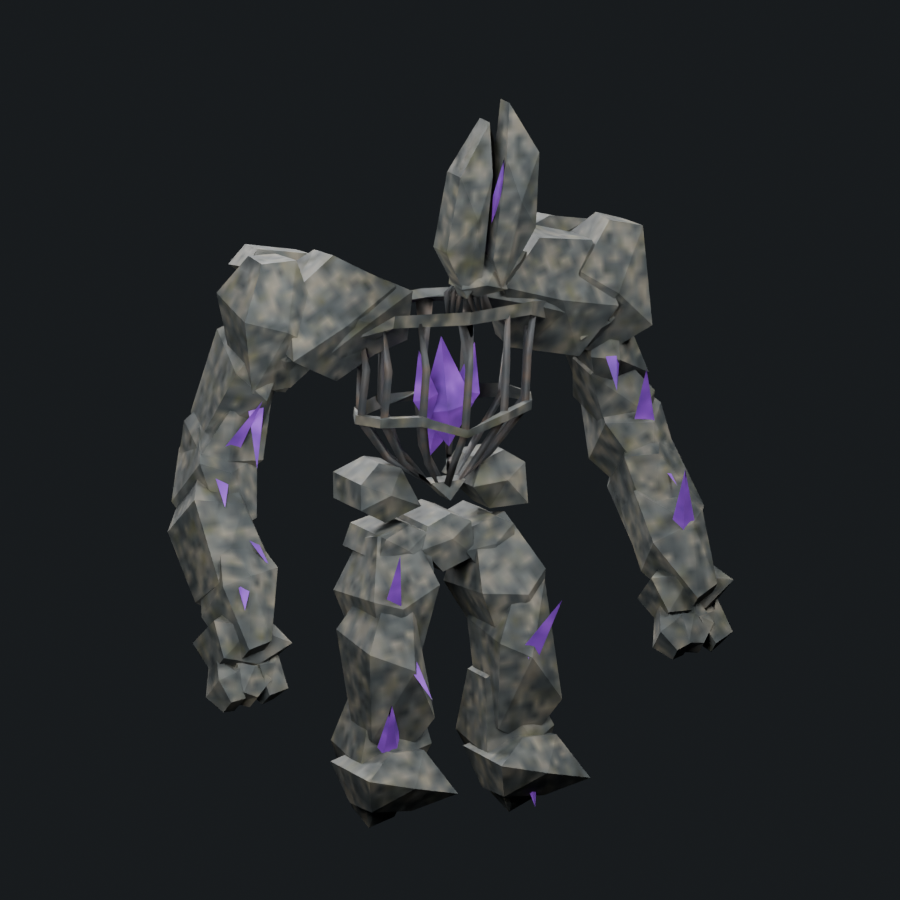
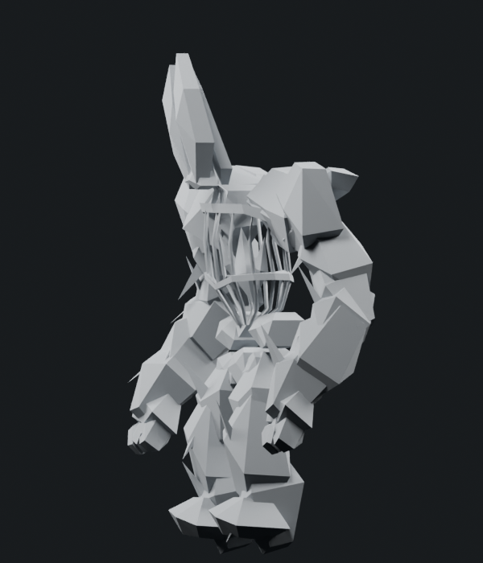

The crest now rakes forward in profile, using the preserved online crown authoring. The paired upper-thorax stones are broader and seated into their shoulder masses. Sixteen limb plates are longer, oblique and staggered in depth, so they overlap rather than forming short repeated chunks; their attached crystals follow those changes. The retained core crystals form a more irregular cluster. The lower head, original arm-root blends and both torso rings remain.
The owned surface atlas introduces blue-gray/ochre stone patches, shallow fracture normals, olive lichen, dark corroded ribs and varied violet crystals. The first stone render was too pale and softly mottled, prompting a darker palette and sharper patch contrast. Surface placement and fine rock fragmentation are still unfinished.
1,800 triangles · native Stone Golem 1,200 · 1.500× · cap 1,800. One mesh/material, four packed 512px maps, eight original bone identities and seven actions. No runtime promotion.






Planning estimate: 8–12 more substantial passes after r10. Current rating remains “not great”; this study is not claimed to be at 85%. No automated similarity score exists. This range assumes meaningful individual remodeling each pass and retains the 1,800-triangle/four-512px-map envelope. Regressions or animation problems can extend it.
| Work remaining | Estimated passes |
|---|---|
| Head, mantle and limb contour remodeling; chipped strata and topology redistribution | 3–4 |
| Crystal core, head cleft and broken floating crest arrangement | 2–3 |
| Directional stone fractures, purposeful weathering, corrosion and crystal emission | 2–3 |
| Coordinated corrections, trimming and deformation/runtime review | 1–2 |
Target: dominant silhouettes and anatomy agree in front and left-facing side; important stone/metal/crystal features read correctly; remaining differences are mainly secondary chips and texture nuances. The user's visual judgment remains the acceptance authority. Revisit this estimate after two more passes. Detailed outlook.
All 76 support groups pass rest and 35 sampled action poses. Arm/digit basal faces pass 8,064 interior/edge samples; crystal bases pass 14,112; two new upper-thorax sections pass 2,016. These checks use the saved evaluated mesh across 36 poses, with zero measured outside distance. Native every-frame deformation and live performance remain pending. Adequately reworked boss tally remains 1/6.
Editable Blender model · Skinned export · Torso close-up · Attack pose · Current changes · Mesh/export checks · Support checks · Arm/digit basal faces · Crystal basal faces · Upper-thorax basal faces · Camera direction · Source provenance